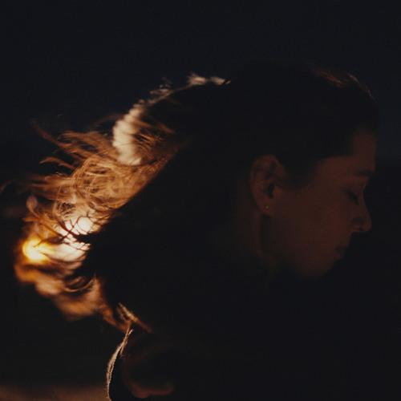
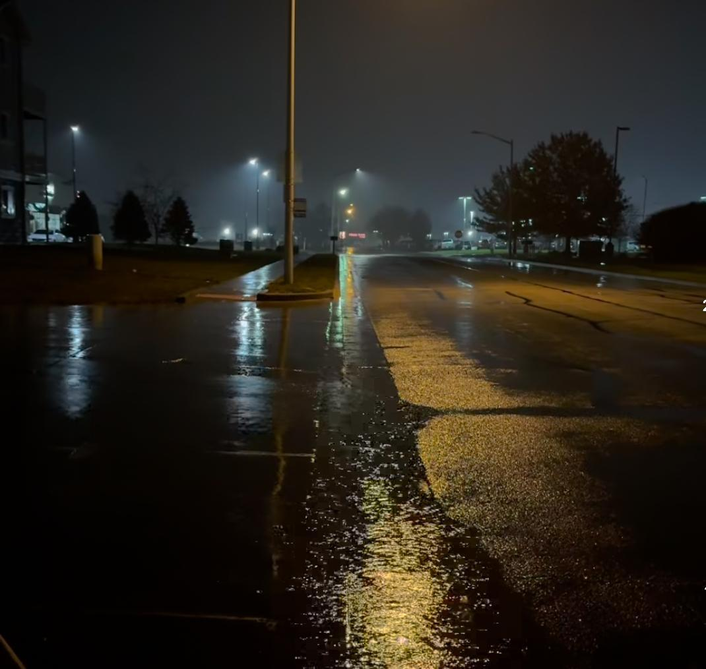
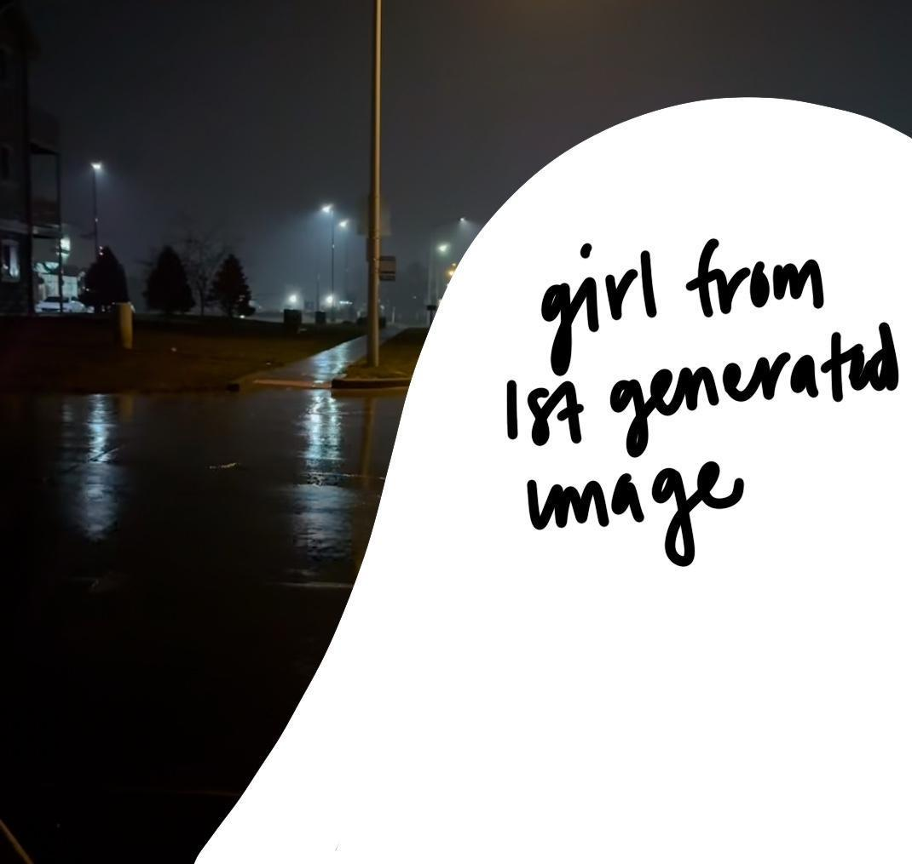
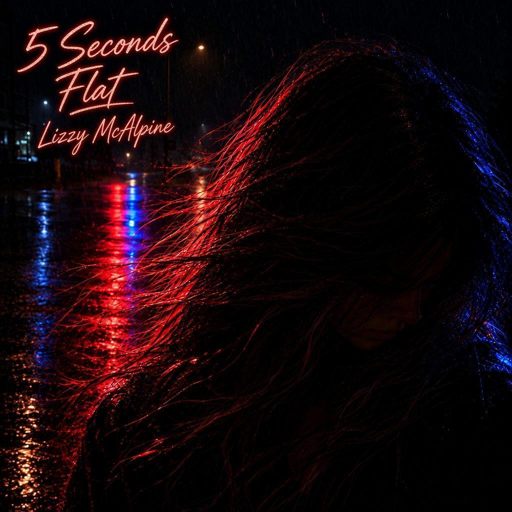

01 — ALBUM COVER REDESIGN · WEEK 06
Five Seconds
Flat Redesign
Album cover redesign for Lizzy McAlpine’s Five Seconds Flat, with handwritten neon lettering over a portrait lit in red and blue.
WEEK 06 SUBMISSION
Process gallery
Inspiration and concept
My visual inspiration was the song “reckless driving” (feat. Ben Kessler). I wanted a dark, rainy fall night with a girl in the lower right, her windblown hair lit by police lights.
Initial prompt
Create a square album cover, with a dark, and rainy fall night background. In the lower right corner have a girl with her hair blowing in the wind looking down towards the bottom right of the cover, with cop car lights lighting up the hair that's bowing in the wind

Original album cover shown before the first AI result.
Initial direction, reference photograph, and rough sketch
The first result looked close to the original album cover. My first refinement was to make the woman’s head larger so the police car would not be visible.
I used a reference photograph and a rough sketch to guide the size and placement of the subject.
Round-two prompt
Use the sketches and photo I used above to redesign this album cover. Make the background of the physical image I input darker and make the light coming out of the lightpost be more faint as well as making only the police cars lights seen, no car visible. As depicted in my sketch that is also inputted above, make the girl from the first variation you created larger and fill up about 85% of the screen.

The first result, before the head-size refinement.

Reference photo used with the round-two prompt. Credit as printed in the submission: “noltography (independant photographer) on Instagram.”

Sketch made to ensure the girl would be larger in the next generation.
Prompting, iterations, and refinements
The later prompt darkened the background, made the lamppost light fainter, and requested that only the police lights be visible. The round-three result still showed the police car. I then asked for brighter reflections and no visible car.
Round-four prompt
Could you redefine this image by making the police car lights reflect on the girl brighter, and making the police car not visible on the cover.
The next result matched the rainy-night background, red-and-blue reflections, and wet hair I had envisioned.

The police car remained visible, the mismatch identified in the submission.

Brighter police-light reflections, with the car removed from view.
Final design and reflection
I added the album title and artist name in a messy cursive style.
I am very pleased with the outcome I received from my prompting in all the stages. I feel like the biggest help was the inspiration photo I gave to the machine, along with making my prompts as straightforward as possible, because when I used too many filler words or “fluff” it gave the machine the opportunity to get caught up in the words rather than the instructions I was feeding it.
I ultimately changed the cover to match the feeling and lyrics of the song “reckless driving” (feat. Ben Kessler), and how I see the end of the song in my mind when listening to it. I changed the orange glow from the original cover to police car lights to depict the “crash” feeling that the song gives you at the end of the song, and honestly how the end of most of her songs in this album make me feel.

Final cover image.

The title and artist name were added in cursive.